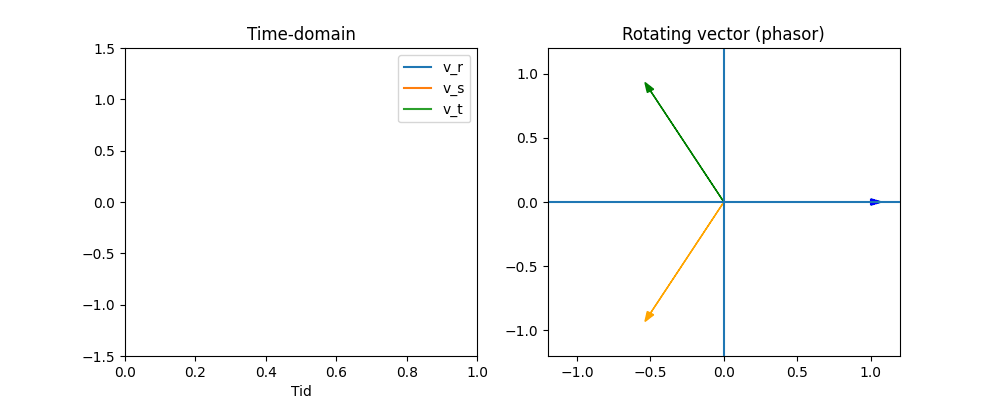

Three-Phase Circuits#
In three-phase circuits there is a 120 degree phase-shift of voltages
\(\theta_v\) in Three-Phase Systems#
\(\omega t\) → time evolution
\(\phi\) → phase angle
\(\theta_v\) → instantaneous voltage angle
This is used to describe signals in the time domain.
Three-Phase Voltages Using \(\theta_v\)#
Standard balanced system:
Compact form:
Everything is governed by a single angle \(\theta_v\):
All three phases “rotate together”
The phase shift is constant (\(120^\circ\))
Connection to Phasors (Rotating Vectors)#
In phasor form, we write:
Interpretation:
The phasors are constant
The rotation is contained in:
Connection Between the Two#
Time signal ↔ phasor:
and
“We describe the three-phase system using a single common angle \(\theta_v\).
All phases are simply shifted versions of the same signal, with \(120^\circ\) separation.
This means the entire system can be viewed as a single rotating quantity.”
Compact Representation#
Three-phase Animation#

import numpy as np
import matplotlib.pyplot as plt
import matplotlib.animation as animation
# Parameters
t = np.linspace(0, 2*np.pi, 200)
Vm = 1
# Figure with two panels
fig, (ax_time, ax_phasor) = plt.subplots(1, 2, figsize=(10, 4))
# --- Time domain ---
ax_time.set_xlim(0, 1)
ax_time.set_ylim(-1.5, 1.5)
ax_time.set_title("Time-domain")
ax_time.set_xlabel("Tid")
line_a, = ax_time.plot([], [], label="v_r")
line_b, = ax_time.plot([], [], label="v_s")
line_c, = ax_time.plot([], [], label="v_t")
ax_time.legend()
# --- Phasor plot ---
ax_phasor.set_xlim(-1.2, 1.2)
ax_phasor.set_ylim(-1.2, 1.2)
ax_phasor.set_title("Rotating vector (phasor)")
ax_phasor.axhline(0)
ax_phasor.axvline(0)
vec_a = ax_phasor.arrow(0, 0, 0, 0)
vec_b = ax_phasor.arrow(0, 0, 0, 0)
vec_c = ax_phasor.arrow(0, 0, 0, 0)
# storage
ta, va_hist = [], []
tb, vb_hist = [], []
tc, vc_hist = [], []
def update(frame):
global vec_a, vec_b, vec_c
theta = frame
# phases
angles = [theta, theta - 2*np.pi/3, theta - 4*np.pi/3]
va = Vm * np.cos(angles[0])
vb = Vm * np.cos(angles[1])
vc = Vm * np.cos(angles[2])
# store history (normalized time)
time_val = theta / (2*np.pi)
ta.append(time_val); va_hist.append(va)
tb.append(time_val); vb_hist.append(vb)
tc.append(time_val); vc_hist.append(vc)
# update time plot
line_a.set_data(ta, va_hist)
line_b.set_data(tb, vb_hist)
line_c.set_data(tc, vc_hist)
# remove old arrows
vec_a.remove()
vec_b.remove()
vec_c.remove()
# draw new phasors
vec_a = ax_phasor.arrow(0, 0,
np.cos(angles[0]), np.sin(angles[0]),
head_width=0.05, color='blue')
vec_b = ax_phasor.arrow(0, 0,
np.cos(angles[1]), np.sin(angles[1]),
head_width=0.05, color='orange')
vec_c = ax_phasor.arrow(0, 0,
np.cos(angles[2]), np.sin(angles[2]),
head_width=0.05, color='green')
return line_a, line_b, line_c, vec_a, vec_b, vec_c
ani = animation.FuncAnimation(
fig, update, frames=np.linspace(0, 2*np.pi, 100), interval=100
)
ani.save("three-phase.gif", writer="pillow")
plt.close()